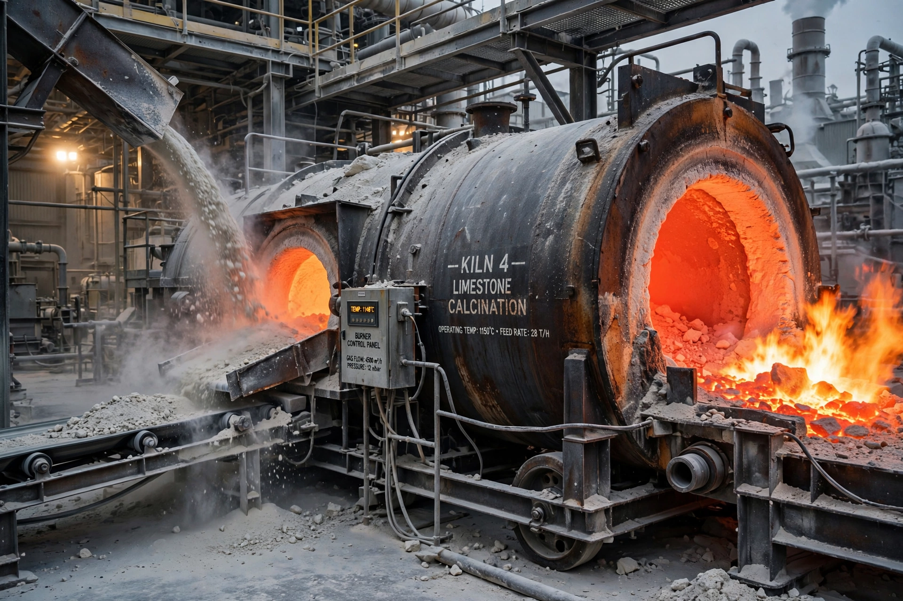

Calcination is a thermal treatment of a solid chemical compound — such as an ore or mineral — in a controlled atmosphere, usually to drive off volatile components, cause thermal decomposition or induce a phase transition, without melting the material.

The name derives from the best-known example: heating limestone (calcium carbonate) to produce quicklime (calcium oxide) and carbon dioxide: CaCO₃ → CaO + CO₂. Other examples include decomposing hydrated alumina, driving water from gypsum to make plaster, removing volatile matter from petroleum coke, and decomposing carbonates and hydroxides in metallurgy.
Calcination is central to cement manufacture (the largest industrial source of process CO₂ emissions), lime production, catalyst preparation, pigment manufacture and ore processing. It differs from roasting, which involves reactions with furnace gases such as oxidation of sulfides, and from pyrolysis of organic material. See Cement and Rotary kiln.